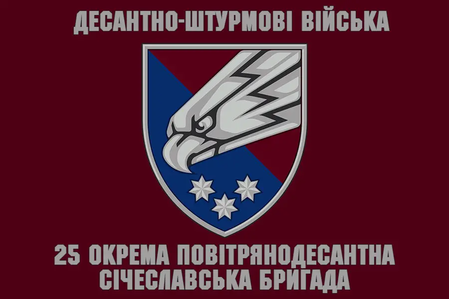

Малофєєв Олександр
Майстер кіокушинкай карате, 1 дан.
Сержант Збройних Сил України
Народився 1975 року.
Тренер клубу "Бусін-кан" м. Кам'янське
25-та окрема повітрянодесантна січеславська бригада
Спогад про героя
3 2014-го Олександр пішов добровольцем на війну. У складі 25-ї окремої повітрянодесантної Січеславської бригади ЗСУ брав участь у боях на Донбасі. Влітку у важкому бою біля Ямполя отримав перше поранення. 20 січня 2015 року в районі шахти «Бутівка» біля Донецького аеропорту був поранений вдруге. Після тривалої реабілітації повернувся на війну. У 2020-му захищав місто Щастя Луганської області.
Був нагороджений нагрудним знаком «За воїнську доблесть». «Цілеспрямований, наполегливий. На війні у Саші з'явилась ще одна родина - родина побратимів. Це люди, яких він цінував і поважав понад усе. До моменту загибелі постійно був на нулі і завжди говорив: «Перемога буде за нами».
Мегапозитивна людина, завжди усміхнений, веселий, душа компанії. Саша з дитинства мріяв бути професійним військовим, багато читав, цікавився історією, вивчав військову справу, колекціонував ножі. І намагався всі навички та знання передати сину. Обожнював дітей, мав досвід спілкування з малечею, бо з 13 років виховував сестричку», - розповіла дружина загиблого.